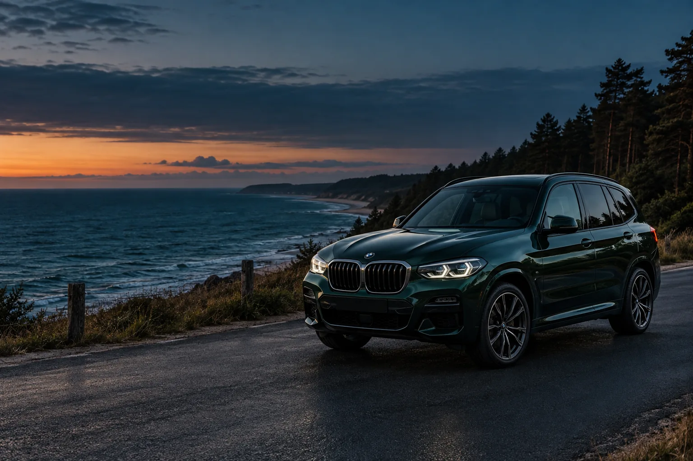

Три идеи для дня у Балтийского моря. Выбирайте настроение, а автомобиль найдётся.

Иллюстративное изображение создано с ИИ
01 ТИШИНА И СОСНЫ
СВЕТЛОГОРСК
День без спешки.
Прогулка среди сосен, приморские улицы, кофе и время, которое можно никуда не торопить. Оставьте автомобиль на разрешённой парковке и исследуйте город пешком.
Пользуйтесь обычными дорогами и разрешёнными парковками. Не выезжайте на пляжи, дюны и закрытые природные территории.
→
Это идеи для самостоятельной поездки, не экскурсионная услуга и не навигационная инструкция. Перед поездкой проверьте погоду, дорожную обстановку и местные ограничения.